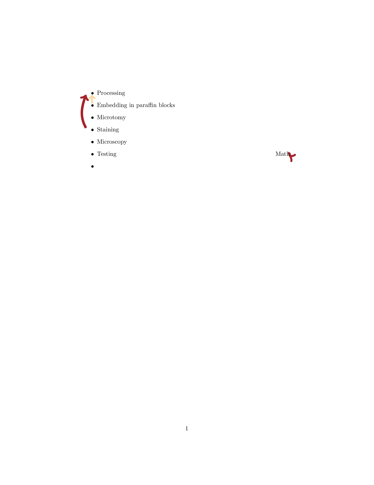

\documentclass{article}
\usepackage{tikz}
\usepackage{xparse}
\usetikzlibrary{tikzmark,decorations.pathreplacing,calc,decorations.markings}
\definecolor{colori}{RGB}{166,35,41}
\definecolor{colorii}{RGB}{248,219,162}
\NewDocumentCommand\MyArrow{O{0pt}mmmO{out=150,in=210}}
{%
\begin{tikzpicture}[overlay, remember picture]
\draw [->,thick,line width=4pt,#4]
( $ ({pic cs:#3}|-{pic cs:#2}) + (-#1,1.3ex) $ ) to[#5]
( $ (pic cs:#3) + (-#1,0) $ );
\end{tikzpicture}%
}
\begin{document}
\MyArrow[0.8em]{start1}{end1}{colorii,line width=3pt}[out=90,in=-90]
\MyArrow[1.8em]{start2}{end1}{colori}[out=120,in=250]
\MyArrow[0.4em]{start3}{end3}{colori}[out=240,in=-30]
\begin{itemize}
\item\tikzmark{end1}Processing
\item\tikzmark{start1}Embedding in paraffin blocks
\item Microtomy
\item\tikzmark{start2}Staining
\item Microscopy
\item Testing \tikzmark{start3} \hfill Math \tikzmark{end3}
\item
\end{itemize}
\end{document}Created by David Li